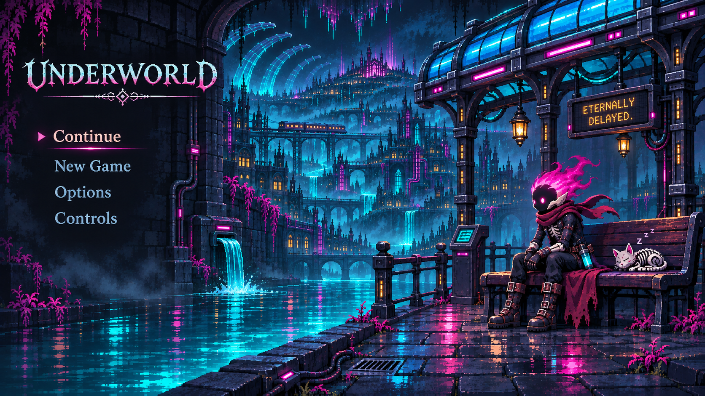

← GameA quiet corner of Confluence
Canal-side station · main-menu visual study. Cole, the sleeping cat, electronic blue-glass shelter, spectral water and an inhabited city beyond.

This is the approved still composition study. The animated production scene is now the default game menu, with independently authored water, reflected light, Cole, the cat and distant railway movement.